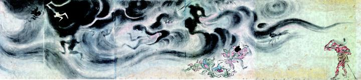

杖をついた赤鬼が仰ぎ見る先には、巨大な黒雲が立ち込めている。猿や兎の化物たちはそれから逃れようとしている。黒雲の中には何体かの化物の影が見え、黒雲それ自体も大きな龍のように見える。
著作者：吉光／出典：親書誌：U426_nichibunken_0057：百鬼ノ図；ヒャッキノズ／日付：2007／資源識別子：U426_nichibunken_0057_0006_0000
Copyright (c)2010- International Research Center for Japanese Studies, Kyoto, Japan. All rights reserved.